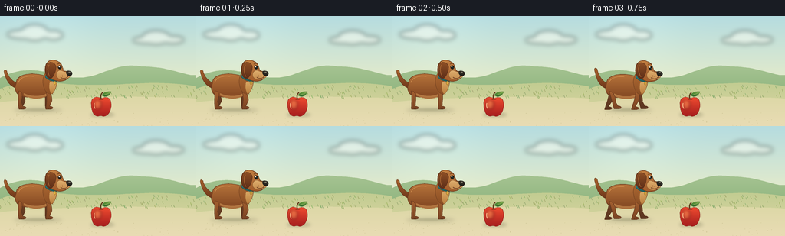
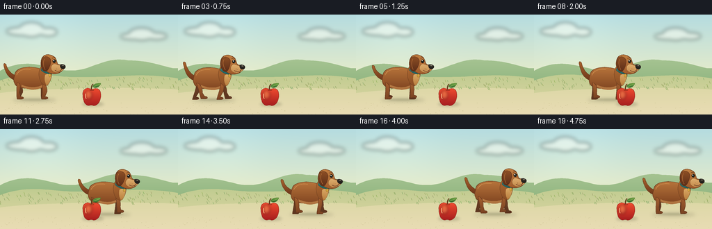

CODING AGENTS AS PIXEL WORLD MODELS
traex/GPT-6.1-Sol · instance_preservation_0002
点击播放 · 原生 RGB 像素
逐轮保存的候选
回放视频、检查图与代码变化。
每份候选均可单独播放。实际图片检查记录在下方工具轨迹中。
候选 01播放与检查图
点击播放 · 原生 RGB 像素


展开代码变化
--- 上一保存版本
+++ 本次保存版本
@@ -0,0 +1,165 @@
+"""Deterministic, supersampled storybook animation made entirely from geometry."""
+from pathlib import Path
+import math
+import numpy as np
+from PIL import Image, ImageDraw, ImageFilter
+import artifact_io
+
+ROOT = Path(__file__).resolve().parent
+S = 4
+W, H = 256*S, 144*S
+
+def path(seq):
+ pts=[]; current=None
+ for cmd, values in seq:
+ if cmd=='M':
+ current=values; pts.append(current)
+ elif cmd=='L':
+ current=values; pts.append(current)
+ elif cmd=='C':
+ p0=current; p1=values[:2];p2=values[2:4];p3=values[4:]
+ for t in np.linspace(0,1,22)[1:]:
+ a=1-t
+ pts.append((a*a*a*p0[0]+3*a*a*t*p1[0]+3*a*t*t*p2[0]+t*t*t*p3[0], a*a*a*p0[1]+3*a*a*t*p1[1]+3*a*t*t*p2[1]+t*t*t*p3[1]))
+ current=p3
+ return pts
+
+def shape(im, pts, top, bottom=None, outline=None, width=.55):
+ pts=[(x*S,y*S) for x,y in pts]
+ mask=Image.new('L',(W,H));md=ImageDraw.Draw(mask);md.polygon(pts,fill=255)
+ if bottom is None: bottom=top
+ yy=np.arange(H)[:,None]
+ lo=min(p[1] for p in pts);hi=max(p[1] for p in pts)
+ f=np.clip((yy-lo)/max(1,hi-lo),0,1)
+ rgb=np.zeros((H,W,3),np.uint8)
+ for c in range(3): rgb[:,:,c]=np.clip(top[c]*(1-f)+bottom[c]*f,0,255)
+ im.paste(Image.fromarray(rgb),(0,0),mask)
+ if outline:
+ ImageDraw.Draw(im).line(pts+[pts[0]],fill=outline,width=max(1,round(S*width)),joint='curve')
+
+def curve(im, seq, color, width=1):
+ pts=path(seq)
+ ImageDraw.Draw(im).line([(x*S,y*S) for x,y in pts],fill=color,width=round(S*width),joint='curve')
+
+def ellipse(im, box, color, outline=None, width=1):
+ ImageDraw.Draw(im).ellipse(tuple(round(p*S) for p in box),fill=color,outline=outline,width=round(width*S))
+
+def shadow(im,box,alpha,blur):
+ lay=Image.new('RGBA',(W,H));ImageDraw.Draw(lay).ellipse(tuple(int(p*S) for p in box),fill=(54,61,32,alpha))
+ lay=lay.filter(ImageFilter.GaussianBlur(blur*S));im.paste(lay,(0,0),lay)
+
+# An unmoving sunny garden, with a shallow depth-of-field feeling.
+y=np.arange(H)[:,None]/S;x=np.arange(W)[None,:]/S
+bg=np.zeros((H,W,3),np.uint8)
+for c,(a,b) in enumerate(zip((181,220,224),(241,239,197))):
+ q=np.clip(y/108,0,1)
+ bg[:,:,c]=np.clip(a*(1-q)+b*q+7*np.exp(-((x-62)**2+(y-22)**2)/3300),0,255)
+background=Image.fromarray(bg)
+far=Image.new('RGBA',(W,H));fd=ImageDraw.Draw(far)
+# Cloud wisps.
+for box in [(9,18,58,30),(27,11,63,32),(57,19,82,31),(173,27,211,36),(185,19,222,37),(210,26,240,36)]:
+ fd.ellipse(tuple(int(p*S) for p in box),fill=(255,255,244,120))
+far=far.filter(ImageFilter.GaussianBlur(3*S)); background.paste(far,(0,0),far)
+shape(background,path([('M',(0,81)),('C',(32,64,56,72,85,79)),('C',(130,88,142,59,185,66)),('C',(223,66,244,80,256,77)),('L',(256,121)),('L',(0,121))]),(165,195,145),(133,174,119))
+shape(background,path([('M',(0,95)),('C',(48,78,77,92,120,90)),('C',(164,91,205,83,256,92)),('L',(256,144)),('L',(0,144))]),(193,204,145),(226,216,167))
+# A warm path beneath the subjects.
+shape(background,path([('M',(0,113)),('C',(61,105,201,104,256,108)),('L',(256,144)),('L',(0,144))]),(221,216,167),(233,220,180))
+# Small, restrained foliage and grass strokes.
+rng=np.random.default_rng(27)
+for j in range(110):
+ gx=rng.uniform(0,256); gy=rng.uniform(93,109)
+ col=tuple(int(v) for v in (147+rng.uniform(-15,15),170+rng.uniform(-12,12),104+rng.uniform(-12,12)))
+ curve(background,[('M',(gx,gy)),('C',(gx-1,gy-1,gx-.9,gy-2,gx-1.5,gy-3))],col,.38)
+for j in range(70):
+ px=rng.uniform(0,256);py=rng.uniform(126,144)
+ ellipse(background,(px,py,px+rng.uniform(.3,1.1),py+.35),(205,195,147))
+
+# The single apple stays in exactly the same place for the entire shot.
+def apple(im):
+ shadow(im,(118,126,149,132),52,1.9)
+ outline=(146,40,32)
+ ap=path([('M',(132,108)),('C',(124,103,118,109,119,116)),('C',(119,124,122,131,128,131)),('C',(131,130,132,130,134,131)),('C',(141,132,146,123,145,115)),('C',(145,107,139,105,132,108))])
+ shape(im,ap,(240,76,48),(165,29,30),outline,.5)
+ # Rounded highlight on the light-facing lobe.
+ shine=Image.new('RGBA',(W,H));sd=ImageDraw.Draw(shine)
+ sd.ellipse((122*S,109*S,132*S,122*S),fill=(255,181,104,95));shine=shine.filter(ImageFilter.GaussianBlur(2*S));im.paste(shine,(0,0),shine)
+ curve(im,[('M',(123,114)),('C',(122,117,123,120,124,121))],(255,191,142),1.0)
+ curve(im,[('M',(129.2,108.6)),('C',(131,109.5,133.5,109.4,135,108.7))],(134,40,24),.75)
+ curve(im,[('M',(132,108)),('C',(131,105,132,102,134,100))],(98,62,30),1.6)
+ leaf=path([('M',(133,104)),('C',(135,98,143,99,145,99)),('C',(143,105,138,107,133,104))])
+ shape(im,leaf,(111,163,64),(46,106,48),(65,104,42),.35)
+ curve(im,[('M',(134,103.8)),('C',(138,102.5,140,102,143.5,100))],(167,192,103),.45)
+
+# All anatomy is translated as one persistent character, with articulated limbs.
+def dog(im,cx,phase,moving):
+ bounce=.7*math.sin(phase*2)*moving
+ cy=96+bounce
+ def pt(a,b):return (cx+a,cy+b)
+ def p(seq):return path([(c,tuple(v+(cx if i%2==0 else cy) for i,v in enumerate(vals))) for c,vals in seq])
+ shadow(im,(cx-28,120,cx+35,126),38,2.5)
+ shadow(im,(cx-18,121,cx+25,124),36,1.0)
+ # Tail swings up and down, its shape and attachment remain stable.
+ wag=math.sin(phase*1.25)*3*moving
+ tail=p([('M',(-23,-8)),('C',(-32,-11,-36,-19-wag,-37,-24-wag)),('C',(-40,-27-wag,-42,-25-wag,-40,-20-wag)),('C',(-38,-11,-32,-3,-23,-1))])
+ shape(im,tail,(167,98,45),(107,53,26),(102,55,27),.55)
+ # Four alternating legs. The near legs have brighter coats and visible toes.
+ def leg(root,ang,near):
+ hipx,hipy=root
+ knee=(hipx+math.sin(ang)*3,hipy+10)
+ foot=(hipx+math.sin(ang)*7,25-max(0,math.cos(ang))*2.1*moving)
+ if not moving:foot=(hipx,25)
+ coords=p([('M',(hipx-3.3,hipy-3)),('C',(hipx+3,hipy-3,knee[0]+2.8,knee[1]-2,knee[0]+2.1,knee[1]+1)),('L',(foot[0]+1.7,foot[1]-3)),('C',(foot[0]+7,foot[1]-3,foot[0]+7,foot[1]+1,foot[0]+3,foot[1]+1)),('L',(foot[0]-3,foot[1]+1)),('C',(foot[0]-4,foot[1],knee[0]-2,knee[1],hipx-3.3,hipy-3))])
+ shape(im,coords,(163,96,48) if near else (112,66,37),(121,66,34) if near else (91,53,31),(93,51,28),.55)
+ if near:
+ curve(im,[('M',pt(foot[0]+2.5,foot[1]-.1)),('L',pt(foot[0]+2.5,foot[1]+.8))],(83,49,29),.45)
+ curve(im,[('M',pt(foot[0]+.3,foot[1]-.1)),('L',pt(foot[0]+.3,foot[1]+.8))],(83,49,29),.45)
+ leg((-18,5),phase+math.pi,False);leg((17,4),phase,False)
+ # Rounded torso.
+ shape(im,p([('M',(-25,-8)),('C',(-25,-20,-5,-23,12,-18)),('C',(24,-18,26,-10,24,0)),('C',(22,10,8,13,-7,10)),('C',(-22,11,-29,4,-25,-8))]),(183,116,59),(128,69,33),(110,62,32),.65)
+ shape(im,p([('M',(-15,5)),('C',(-2,11,11,9,19,3)),('C',(15,13,-1,15,-15,8))]),(187,128,71),(171,111,61))
+ # Small shoulders/haunch highlights imply muscle under the coat.
+ curve(im,[('M',pt(-22,-9)),('C',pt(-19,-17)+pt(-9,-18)+pt(-2,-17))],(208,144,80),.65)
+ leg((-18,5),phase,True);leg((17,4),phase+math.pi,True)
+ # The chest rises to the neck and collar.
+ shape(im,p([('M',(10,-10)),('C',(11,-23,17,-28,25,-27)),('C',(31,-22,30,-3,22,6)),('C',(15,8,11,0,10,-10))]),(182,111,53),(137,78,37),(111,63,30),.55)
+ shape(im,p([('M',(19,-9)),('C',(22,-11,26,-11,28,-9)),('C',(27,-1,24,5,21,6)),('C',(18,1,18,-4,19,-9))]),(219,169,101),(184,126,62))
+ shape(im,p([('M',(14,-20)),('C',(19,-16,24,-14,30,-15)),('L',(30,-11)),('C',(24,-9,18,-11,13,-16))]),(54,132,129),(26,92,91),(27,77,74),.5)
+ ellipse(im,(cx+24,cy-11,cx+27,cy-6),(220,173,64),(150,110,36),.4)
+ # Far ear behind the head.
+ shape(im,p([('M',(25,-32)),('C',(35,-35,38,-25,35,-20)),('L',(29,-24))]),(115,66,32),(88,44,25),(89,45,25),.5)
+ # Skull and muzzle, in a friendly side / three-quarter profile.
+ shape(im,p([('M',(13,-28)),('C',(14,-39,24,-41,32,-35)),('C',(36,-32,35,-27,38,-24)),('C',(45,-24,46,-18,42,-14)),('C',(35,-8,24,-11,20,-15)),('C',(14,-17,12,-23,13,-28))]),(192,126,65),(160,91,43),(106,57,27),.65)
+ shape(im,p([('M',(31,-25)),('C',(34,-26,36,-23,41,-23)),('C',(48,-24,48,-16,41,-14)),('C',(35,-10,29,-14,28,-17)),('C',(27,-20,28,-23,31,-25))]),(223,175,111),(195,138,76),(140,88,44),.45)
+ # Nose is black and wet with a subtle cool reflection.
+ shape(im,p([('M',(41,-24)),('C',(43,-25,48,-24,48,-21)),('C',(48,-18,45,-17,43,-18)),('C',(41,-19,40,-22,41,-24))]),(56,50,41),(28,26,24),(31,28,24),.4)
+ ellipse(im,(cx+43,cy-23.3,cx+45.8,cy-22.2),(129,123,107))
+ curve(im,[('M',pt(43,-17.5)),('C',pt(40,-13)+pt(35,-14)+pt(33,-16))],(103,58,35),.7)
+ # A single expressive eye, with a tiny glint.
+ ellipse(im,(cx+29.5,cy-31.5,cx+34.2,cy-26.5),(68,43,26))
+ ellipse(im,(cx+30.1,cy-31.1,cx+33.9,cy-26.7),(22,25,22))
+ ellipse(im,(cx+30.6,cy-30.6,cx+32,cy-29.1),(255,248,223))
+ ellipse(im,(cx+32.7,cy-28.5,cx+33.3,cy-27.9),(156,166,153))
+ curve(im,[('M',pt(29,-33)),('C',pt(31,-34)+pt(33,-34)+pt(34,-32.8))],(117,68,32),.65)
+ # Consistent large floppy ear, draped over the side of the head.
+ swing=math.sin(phase+.4)*1.0*moving
+ shape(im,p([('M',(16,-34)),('C',(20,-38,27,-34,27,-29)),('C',(27,-23,23+swing,-14,19+swing,-14)),('C',(13+swing,-15,13,-25,14,-30)),('C',(14,-33,15,-34,16,-34))]),(141,79,37),(92,45,24),(92,48,26),.6)
+ curve(im,[('M',pt(18,-32)),('C',pt(15,-28)+pt(17+swing,-19)+pt(19+swing,-17))],(174,106,54),.75)
+ # Delicate muzzle whisker dots.
+ for dx,dy in [(35,-19),(37,-18),(35,-17)]:
+ ellipse(im,(cx+dx,cy+dy,cx+dx+.55,cy+dy+.55),(142,88,43))
+
+frames=[]
+for i in range(20):
+ # Hold each relational state long enough to be unambiguous.
+ u=np.clip((i-2)/14,0,1)
+ smooth=u*u*(3-2*u)
+ cx=46+151*smooth
+ moving=1.0 if 2<i<17 else 0.0
+ phase=(i-2)*1.08
+ im=background.copy()
+ dog(im,cx,phase,moving)
+ apple(im) # The apple is slightly nearer the camera than the walking dog.
+ frame=im.resize((256,144),Image.Resampling.LANCZOS)
+ frames.append(np.asarray(frame,dtype=np.uint8))
+artifact_io.save(np.stack(frames),ROOT)
+print('Saved 20 RGB frames and video player to',ROOT)
可观测工具轨迹
实际执行的命令与返回图片。
命令 1exit 0
/bin/bash -lc 'ls -la; cat prompt.txt; cat GENERATION_RULES.md; cat task_spec.json'
命令 2exit 0
/bin/bash -lc "cat artifact_io.py; python - <<'PY' import importlib.util for m in ['PIL','numpy','aggdraw','cv2']: print(m, bool(importlib.util.find_spec(m))) PY"
命令 3exit 1
/bin/bash -lc "cat > generate.py <<'PY'
\"\"\"Deterministic, supersampled storybook animation made entirely from geometry.\"\"\"
from pathlib import Path
import math
import numpy as np
from PIL import Image, ImageDraw, ImageFilter
import artifact_io
ROOT = Path(__file__).resolve().parent
S = 4
W, H = 256*S, 144*S
def path(seq):
pts=[]; current=None
for cmd, values in seq:
if cmd=='M':
current=values; pts.append(current)
elif cmd=='L':
current=values; pts.append(current)
elif cmd=='C':
p0=current; p1=values[:2];p2=values[2:4];p3=values[4:]
for t in np.linspace(0,1,22)[1:]:
a=1-t
pts.append((a*a*a*p0[0]+3*a*a*t*p1[0]+3*a*t*t*p2[0]+t*t*t*p3[0], a*a*a*p0[1]+3*a*a*t*p1[1]+3*a*t*t*p2[1]+t*t*t*p3[1]))
current=p3
return pts
def shape(im, pts, top, bottom=None, outline=None, width=.55):
pts=[(x*S,y*S) for x,y in pts]
mask=Image.new('L',(W,H));md=ImageDraw.Draw(mask);md.polygon(pts,fill=255)
if bottom is None: bottom=top
yy=np.arange(H)[:,None]
lo=min(p[1] for p in pts);hi=max(p[1] for p in pts)
f=np.clip((yy-lo)/max(1,hi-lo),0,1)
rgb=np.zeros((H,W,3),np.uint8)
for c in range(3): rgb[:,:,c]=np.clip(top[c]*(1-f)+bottom[c]*f,0,255)
im.paste(Image.fromarray(rgb),(0,0),mask)
if outline:
ImageDraw.Draw(im).line(pts+[pts[0]],fill=outline,width=max(1,round(S*width)),joint='curve')
def curve(im, seq, color, width=1):
pts=path(seq)
ImageDraw.Draw(im).line([(x*S,y*S) for x,y in pts],fill=color,width=round(S*width),joint='curve')
def ellipse(im, box, color, outline=None, width=1):
ImageDraw.Draw(im).ellipse(tuple(round(p*S) for p in box),fill=color,outline=outline,width=round(width*S))
def shadow(im,box,alpha,blur):
lay=Image.new('RGBA',(W,H));ImageDraw.Draw(lay).ellipse(tuple(int(p*S) for p in box),fill=(54,61,32,alpha))
lay=lay.filter(ImageFilter.GaussianBlur(blur*S));im.paste(lay,(0,0),lay)
# An unmoving sunny garden, with a shallow depth-of-field feeling.
y=np.arange(H)[:,None]/S;x=np.arange(W)[None,:]/S
bg=np.zeros((H,W,3),np.uint8)
for c,(a,b) in enumerate(zip((181,220,224),(241,239,197))):
q=np.clip(y/108,0,1)
bg[:,:,c]=np.clip(a*(1-q)+b*q+7*np.exp(-((x-62)**2+(y-22)**2)/3300),0,255)
background=Image.fromarray(bg)
far=Image.new('RGBA',(W,H));fd=ImageDraw.Draw(far)
# Cloud wisps.
for box in [(9,18,58,30),(27,11,63,32),(57,19,82,31),(173,27,211,36),(185,19,222,37),(210,26,240,36)]:
fd.ellipse(tuple(int(p*S) for p in box),fill=(255,255,244,120))
far=far.filter(ImageFilter.GaussianBlur(3*S)); background.paste(far,(0,0),far)
shape(background,path([('M',(0,81)),('C',(32,64,56,72,85,79)),('C',(130,88,142,59,185,66)),('C',(223,66,244,80,256,77)),('L',(256,121)),('L',(0,121))]),(165,195,145),(133,174,119))
shape(background,path([('M',(0,95)),('C',(48,78,77,92,120,90)),('C',(164,91,205,83,256,92)),('L',(256,144)),('L',(0,144))]),(193,204,145),(226,216,167))
# A warm path beneath the subjects.
shape(background,path([('M',(0,113)),('C',(61,105,201,104,256,108)),('L',(256,144)),('L',(0,144))]),(221,216,167),(233,220,180))
# Small, restrained foliage and grass strokes.
rng=np.random.default_rng(27)
for j in range(110):
gx=rng.uniform(0,256); gy=rng.uniform(93,109)
col=tuple(int(v) for v in (147+rng.uniform(-15,15),170+rng.uniform(-12,12),104+rng.uniform(-12,12)))
curve(background,[('M',(gx,gy)),('C',(gx-1,gy-1,gx-.9,gy-2,gx-1.5,gy-3))],col,.38)
for j in range(70):
px=rng.uniform(0,256);py=rng.uniform(126,144)
ellipse(background,(px,py,px+rng.uniform(.3,1.1),py+.35),(205,195,147))
# The single apple stays in exactly the same place for the entire shot.
def apple(im):
shadow(im,(118,126,149,132),52,1.9)
outline=(146,40,32)
ap=path([('M',(132,108)),('C',(124,103,118,109,119,116)),('C',(119,124,122,131,128,131)),('C',(131,130,132,130,134,131)),('C',(141,132,146,123,145,115)),('C',(145,107,139,105,132,108))])
shape(im,ap,(240,76,48),(165,29,30),outline,.5)
# Rounded highlight on the light-facing lobe.
shine=Image.new('RGBA',(W,H));sd=ImageDraw.Draw(shine)
sd.ellipse((122*S,109*S,132*S,122*S),fill=(255,181,104,95));shine=shine.filter(ImageFilter.GaussianBlur(2*S));im.paste(shine,(0,0),shine)
curve(im,[('M',(123,114)),('C',(122,117,123,120,124,121))],(255,191,142),1.0)
curve(im,[('M',(129.2,108.6)),('C',(131,109.5,133.5,109.4,135,108.7))],(134,40,24),.75)
curve(im,[('M',(132,108)),('C',(131,105,132,102,134,100))],(98,62,30),1.6)
leaf=path([('M',(133,104)),('C',(135,98,143,99,145,99)),('C',(143,105,138,107,133,104))])
shape(im,leaf,(111,163,64),(46,106,48),(65,104,42),.35)
curve(im,[('M',(134,103.8)),('C',(138,102.5,140,102,143.5,100))],(167,192,103),.45)
# All anatomy is translated as one persistent character, with articulated limbs.
def dog(im,cx,phase,moving):
bounce=.7*math.sin(phase*2)*moving
cy=96+bounce
def pt(a,b):return (cx+a,cy+b)
def p(seq):return path([(c,tuple(v+([cx,cy]* (len(v)//2))[i] for i,v in enumerate(vals))) for c,vals in seq])
shadow(im,(cx-28,120,cx+35,126),38,2.5)
shadow(im,(cx-18,121,cx+25,124),36,1.0)
# Tail swings up and down, its shape and attachment remain stable.
wag=math.sin(phase*1.25)*3*moving
tail=p([('M',(-23,-8)),('C',(-32,-11,-36,-19-wag,-37,-24-wag)),('C',(-40,-27-wag,-42,-25-wag,-40,-20-wag)),('C',(-38,-11,-32,-3,-23,-1))])
shape(im,tail,(167,98,45),(107,53,26),(102,55,27),.55)
# Four alternating legs. The near legs have brighter coats and visible toes.
def leg(root,ang,near):
hipx,hipy=root
knee=(hipx+math.sin(ang)*3,hipy+10)
foot=(hipx+math.sin(ang)*7,25-max(0,math.cos(ang))*2.1*moving)
if not moving:foot=(hipx,25)
coords=p([('M',(hipx-3.3,hipy-3)),('C',(hipx+3,hipy-3,knee[0]+2.8,knee[1]-2,knee[0]+2.1,knee[1]+1)),('L',(foot[0]+1.7,foot[1]-3)),('C',(foot[0]+7,foot[1]-3,foot[0]+7,foot[1]+1,foot[0]+3,foot[1]+1)),('L',(foot[0]-3,foot[1]+1)),('C',(foot[0]-4,foot[1],knee[0]-2,knee[1],hipx-3.3,hipy-3))])
shape(im,coords,(163,96,48) if near else (112,66,37),(121,66,34) if near else (91,53,31),(93,51,28),.55)
if near:
curve(im,[('M',pt(foot[0]+2.5,foot[1]-.1)),('L',pt(foot[0]+2.5,foot[1]+.8))],(83,49,29),.45)
curve(im,[('M',pt(foot[0]+.3,foot[1]-.1)),('L',pt(foot[0]+.3,foot[1]+.8))],(83,49,29),.45)
leg((-18,5),phase+math.pi,False);leg((17,4),phase,False)
# Rounded torso.
shape(im,p([('M',(-25,-8)),('C',(-25,-20,-5,-23,12,-18)),('C',(24,-18,26,-10,24,0)),('C',(22,10,8,13,-7,10)),('C',(-22,11,-29,4,-25,-8))]),(183,116,59),(128,69,33),(110,62,32),.65)
shape(im,p([('M',(-15,5)),('C',(-2,11,11,9,19,3)),('C',(15,13,-1,15,-15,8))]),(187,128,71),(171,111,61))
# Small shoulders/haunch highlights imply muscle under the coat.
curve(im,[('M',pt(-22,-9)),('C',pt(-19,-17)+pt(-9,-18)+pt(-2,-17))],(208,144,80),.65)
leg((-18,5),phase,True);leg((17,4),phase+math.pi,True)
# The chest rises to the neck and collar.
shape(im,p([('M',(10,-10)),('C',(11,-23,17,-28,25,-27)),('C',(31,-22,30,-3,22,6)),('C',(15,8,11,0,10,-10))]),(182,111,53),(137,78,37),(111,63,30),.55)
shape(im,p([('M',(19,-9)),('C',(22,-11,26,-11,28,-9)),('C',(27,-1,24,5,21,6)),('C',(18,1,18,-4,19,-9))]),(219,169,101),(184,126,62))
shape(im,p([('M',(14,-20)),('C',(19,-16,24,-14,30,-15)),('L',(30,-11)),('C',(24,-9,18,-11,13,-16))]),(54,132,129),(26,92,91),(27,77,74),.5)
ellipse(im,(cx+24,cy-11,cx+27,cy-6),(220,173,64),(150,110,36),.4)
# Far ear behind the head.
shape(im,p([('M',(25,-32)),('C',(35,-35,38,-25,35,-20)),('L',(29,-24))]),(115,66,32),(88,44,25),(89,45,25),.5)
# Skull and muzzle, in a friendly side / three-quarter profile.
shape(im,p([('M',(13,-28)),('C',(14,-39,24,-41,32,-35)),('C',(36,-32,35,-27,38,-24)),('C',(45,-24,46,-18,42,-14)),('C',(35,-8,24,-11,20,-15)),('C',(14,-17,12,-23,13,-28))]),(192,126,65),(160,91,43),(106,57,27),.65)
shape(im,p([('M',(31,-25)),('C',(34,-26,36,-23,41,-23)),('C',(48,-24,48,-16,41,-14)),('C',(35,-10,29,-14,28,-17)),('C',(27,-20,28,-23,31,-25))]),(223,175,111),(195,138,76),(140,88,44),.45)
# Nose is black and wet with a subtle cool reflection.
shape(im,p([('M',(41,-24)),('C',(43,-25,48,-24,48,-21)),('C',(48,-18,45,-17,43,-18)),('C',(41,-19,40,-22,41,-24))]),(56,50,41),(28,26,24),(31,28,24),.4)
ellipse(im,(cx+43,cy-23.3,cx+45.8,cy-22.2),(129,123,107))
curve(im,[('M',pt(43,-17.5)),('C',pt(40,-13)+pt(35,-14)+pt(33,-16))],(103,58,35),.7)
# A single expressive eye, with a tiny glint.
ellipse(im,(cx+29.5,cy-31.5,cx+34.2,cy-26.5),(68,43,26))
ellipse(im,(cx+30.1,cy-31.1,cx+33.9,cy-26.7),(22,25,22))
ellipse(im,(cx+30.6,cy-30.6,cx+32,cy-29.1),(255,248,223))
ellipse(im,(cx+32.7,cy-28.5,cx+33.3,cy-27.9),(156,166,153))
curve(im,[('M',pt(29,-33)),('C',pt(31,-34)+pt(33,-34)+pt(34,-32.8))],(117,68,32),.65)
# Consistent large floppy ear, draped over the side of the head.
swing=math.sin(phase+.4)*1.0*moving
shape(im,p([('M',(16,-34)),('C',(20,-38,27,-34,27,-29)),('C',(27,-23,23+swing,-14,19+swing,-14)),('C',(13+swing,-15,13,-25,14,-30)),('C',(14,-33,15,-34,16,-34))]),(141,79,37),(92,45,24),(92,48,26),.6)
curve(im,[('M',pt(18,-32)),('C',pt(15,-28)+pt(17+swing,-19)+pt(19+swing,-17))],(174,106,54),.75)
# Delicate muzzle whisker dots.
for dx,dy in [(35,-19),(37,-18),(35,-17)]:
ellipse(im,(cx+dx,cy+dy,cx+dx+.55,cy+dy+.55),(142,88,43))
frames=[]
for i in range(20):
# Hold each relational state long enough to be unambiguous.
u=np.clip((i-2)/14,0,1)
smooth=u*u*(3-2*u)
cx=46+151*smooth
moving=1.0 if 2<i<17 else 0.0
phase=(i-2)*1.08
im=background.copy()
dog(im,cx,phase,moving)
apple(im) # The apple is slightly nearer the camera than the walking dog.
frame=im.resize((256,144),Image.Resampling.LANCZOS)
frames.append(np.asarray(frame,dtype=np.uint8))
artifact_io.save(np.stack(frames),ROOT)
print('Saved 20 RGB frames and video player to',ROOT)
PY
python generate.py"命令 4exit 1
/bin/bash -lc "sed -i 's/v+([cx,cy]\\* (len(v)\\/\\/2))\\[i\\]/v+(cx if i%2==0 else cy)/' generate.py python generate.py"
命令 5exit 0
/bin/bash -lc 'python generate.py'
命令 6exit 0
/bin/bash -lc "command -v ffmpeg; ls -lh pixels.npz index.html inspection.png; python - <<'PY'
import numpy as np
p=np.load('pixels.npz')['pixels']
print('Verified stored RGB video:',p.shape,p.dtype)
PY"视觉工具实际返回图片 1

保存候选 1 份；完成命令 6 次；可验证图片返回 1 张。原始 API 响应与完整日志保留在本地。